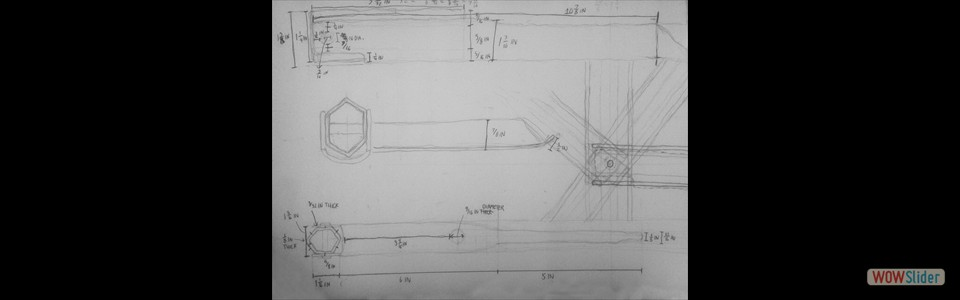

Year I: Fall 2016 - Spring 2017
Year II: Fall 2017 - Spring 2018
Year III: Fall 2018 - Spring 2019
Year IV: Fall 2019 - Spring 2020
Year V: Fall 2020 - Spring 2021
Graduate Years: Fall 2021 - Spring 2023
48-100: Studio
- Drawn on August 30,2016
 Drawn on August 30, 2016
Drawn on August 30, 2016 Drawn on August 30, 2016
Drawn on August 30, 2016- Drawn on August 30, 2016
 Drawn in Pencil; October 3, 2016
Drawn in Pencil; October 3, 2016- Drawn in Pencil; October 3, 2016
 Drawn in Pencil; October 3, 2016
Drawn in Pencil; October 3, 2016 Drawn in Pencil; October 3, 2016
Drawn in Pencil; October 3, 2016 Drawn on October 7, 2016
College of Fine Arts, CMU
Drawn on October 7, 2016
College of Fine Arts, CMU Drawn on October 7, 2016
College of Fine Arts, CMU
Drawn on October 7, 2016
College of Fine Arts, CMU- Drawn on October 7, 2016 College of Fine Arts, CMU
- Drawn in Pencil; October 10, 2016
 Drawn in Charcoal; October 17, 2016
Drawn in Charcoal; October 17, 2016 Drawn on September 2, 2016
Margaret Morrison Carnegie Hall, CMU
Drawn on September 2, 2016
Margaret Morrison Carnegie Hall, CMU - Drawn on September 2, 2016 College of Fine Arts, CMU
 Drawn on September 6, 2016
Drawn on September 6, 2016
- Drawn on September 6, 2016
 Drawn on September 6, 2016
Drawn on September 6, 2016
- Drawn on September 9, 2016
 Drawn on September 9, 2016
Gates Hillman Center, CMU
Drawn on September 9, 2016
Gates Hillman Center, CMU Drawn on September 10, 2016
College of Fine Arts, CMU
Drawn on September 10, 2016
College of Fine Arts, CMU Drawn on September 10, 2016
Margaret Morrison Carnegie Hall, CMU
Drawn on September 10, 2016
Margaret Morrison Carnegie Hall, CMU Drawn in conti, September 12, 2016
Drawn in conti, September 12, 2016- Drawn on September 16, 2016 Carnegie Museum of Natural History
- Drawn in pencil; September, 18, 2016
- Drawn in pencil; September 25, 2016
- Drawn in pencil; September 25, 2016
- September 5, 2016 Outside Margaret Morrison Carnegei Hall, CMU
- September 5, 2016 Point Breeze, Pittsburgh
 September 5, 2016
Outside Gates Hillman Center, CMU
September 5, 2016
Outside Gates Hillman Center, CMU September 5, 2016
Hamerschlag House, CMU
September 5, 2016
Hamerschlag House, CMU September 5, 2016
Margaret Morrison Carnegei Hall, CMU
September 5, 2016
Margaret Morrison Carnegei Hall, CMU
 2
2 3
3 4
4 5
5 6
6 7
7 8
8 9
9 10
10 11
11 12
12 14
14 17
17 18
18 19
19 20
20 21
21 22
22 23
23 24
24 25
25 26
26 29
29 32
32bootstrap slider by WOWSlider.com v8.7
48-100: Studio Sketches
 Precursor Sketch to Section and Plan of CFA
Precursor Sketch to Section and Plan of CFA
 Precursor Sketches to Fossil Chasm
Precursor Sketches to Fossil Chasm

 Sketch of Knee Residence Paraline concept
Sketch of Knee Residence Paraline concept Conceptual sketches of Handsaw Space
Conceptual sketches of Handsaw Space 1
1 4
4 7
7bootstrap carousel by WOWSlider.com v8.7
48-100: Cube House Concepts


- Practice perspective for cube house.
 Drawn in pencil.
Template structure for the cube house.
Drawn in pencil.
Template structure for the cube house.

 3
3 4
4 7
7 8
8 9
9bootstrap slider by WOWSlider.com v8.7
48-100: Cube House Drawings and Models
- Taken from the "Eastern Side" of the site Drafted in pencil
 Taken through the "South side" of the site
Drafted in pencil
Taken through the "South side" of the site
Drafted in pencil- Drafted and rendered in pencil
 Drafted and rendered in pencil
Drafted and rendered in pencil- 20" x 20". Basswood and sandpaper

 Basic shape and form of the cube house.
Basic shape and form of the cube house.


 1
1 4
4 5
5 6
6 8
8 9
9 10
10 11
11 13
13bootstrap slider by WOWSlider.com v8.7
48-120: Knee Residence Study
 Drafted in pencil.
Illusrated from north side of building
Drafted in pencil.
Illusrated from north side of building- Drafted in pencil. Illustrated from north side of building.
 Drafted in pencil.
Drafted in pencil.- Drafted in pencil.
 Strathmore, cardboard, and chipboard model.
Partnered with two colleagues (Harrison Branch-Shaw and Christoph Eckrich) to construct.
Strathmore, cardboard, and chipboard model.
Partnered with two colleagues (Harrison Branch-Shaw and Christoph Eckrich) to construct. Strathmore, cardboard, and chipboard model.
Strathmore, cardboard, and chipboard model.
 2
2 5
5 6
6bootstrap slider by WOWSlider.com v8.7
48-120: Digital Media
- First class Adobe Photoshop experimentation
 Based on template. Edited via Adobe Illustrator.
Based on template. Edited via Adobe Illustrator. Based on template. Created via Rhinoceros.
Based on template. Created via Rhinoceros.") Based on Le Corbusier's 1914 Domino House concept. Created via Rhinoceros
Based on Le Corbusier's 1914 Domino House concept. Created via Rhinoceros Model made in Rhinoceros. Rendering and editing made via Adobe Photoshop.
Model made in Rhinoceros. Rendering and editing made via Adobe Photoshop.- Based on Analog Media study of Knee Residence. Created via Adobe Photoshop.
 2
2 7
7bootstrap slider by WOWSlider.com v8.7
48-105: Car Crank - Project 1
- Principle subject for movement, physicality, and design for Project 1 Final Model
 Secondary subject for Project 1 Final Model
Secondary subject for Project 1 Final Model- 
- To study the tool's physicality
 To measure the tool's movement and capacity
To measure the tool's movement and capacity

- Based on Initial Motion Crank Drawing
 Based on Initial Motion Crank Drawing
Based on Initial Motion Crank Drawing Based on Initial Section Drawing 1
Based on Initial Section Drawing 1- Based on Initial Section Drawing 2

") Provided by partner Michael Longo
Provided by partner Michael Longo Based on previous drawing
Based on previous drawing


 1
1 3
3 5
5 6
6 7
7 9
9 12
12 13
13 15
15 17
17 18
18 19
19 20
20 22
22 24
24 25
25 26
26 27
27 28
28 29
29bootstrap slider by WOWSlider.com v8.7
48-105: CMU Hunt Library Transformation - Project 2 (Underway)
 Precedent Diagrams") To prepare for altering Hunt Library in CMU
To prepare for altering Hunt Library in CMU


 To analyze and improve upon current nuances and features of Hunt Library
To analyze and improve upon current nuances and features of Hunt Library


 To suggest changes to Hunt Library to improve its atmosphere and spatial qualities
To suggest changes to Hunt Library to improve its atmosphere and spatial qualities 3
3 4
4 6
6 7
7 9
9 10
10 11
11 12
12 14
14bootstrap slider by WOWSlider.com v8.7
48-125: Analog Media
 Drawn in pencil.
Carnegie Museum of Art
Drawn in pencil.
Carnegie Museum of Art Drawn in pencil.
College of Fine Arts, CMU
Drawn in pencil.
College of Fine Arts, CMU- Drawn in pencil. Purnell Center of the Arts, CMU
 Drawn in black and white pencil on gray charcoal paper.
College of Fine Arts, CMU
Drawn in black and white pencil on gray charcoal paper.
College of Fine Arts, CMU- Drawn in black and white pencil on gray charcoal paper. College of Fine Arts Facade, CMU
- College of Fine Arts, CMU
 College of Fine Arts Statue, CMU
College of Fine Arts Statue, CMU- Plant, CMU
- College of Fine Arts Facade, CMU
- Margaret Morrison Carnegie Hall, CMU
 Baker Hall, CMU
Baker Hall, CMU Baker Hall, CMU
Baker Hall, CMU Gates Hillman Center, CMU
Gates Hillman Center, CMU- Gates Hillman Center, CMU
 1
1 3
3 5
5 6
6 7
7 8
8 9
9 11
11 12
12 13
13 14
14wowslider.com by WOWSlider.com v8.7
48-125: Digital Media
 Made via Rhinoceros, Adobe Illustrator, and Adobe InDesign.
Made via Rhinoceros, Adobe Illustrator, and Adobe InDesign. Made via Rhinoceros, Adobe Illustrator, and Adobe InDesign.
Made via Rhinoceros, Adobe Illustrator, and Adobe InDesign. Made via Rhinoceros
Made via Rhinoceros 
 Made via Rhinoceros and Modelo
Made via Rhinoceros and Modelo
 Made via Rhinoceros
Made via Rhinoceros
- Made via Rhinoceros and V-Ray rendering. Cohon University Center, CMU
 Made via Rhinoceros, V-Ray, and Adobe Photoshop
Made via Rhinoceros, V-Ray, and Adobe Photoshop- Made via Rhinoceros and V-Ray rendering
 Made via AutoCAD
Made via AutoCAD
 3
3 4
4 7
7 10
10 11
11 12
12 14
14wowslider.com by WOWSlider.com v8.7